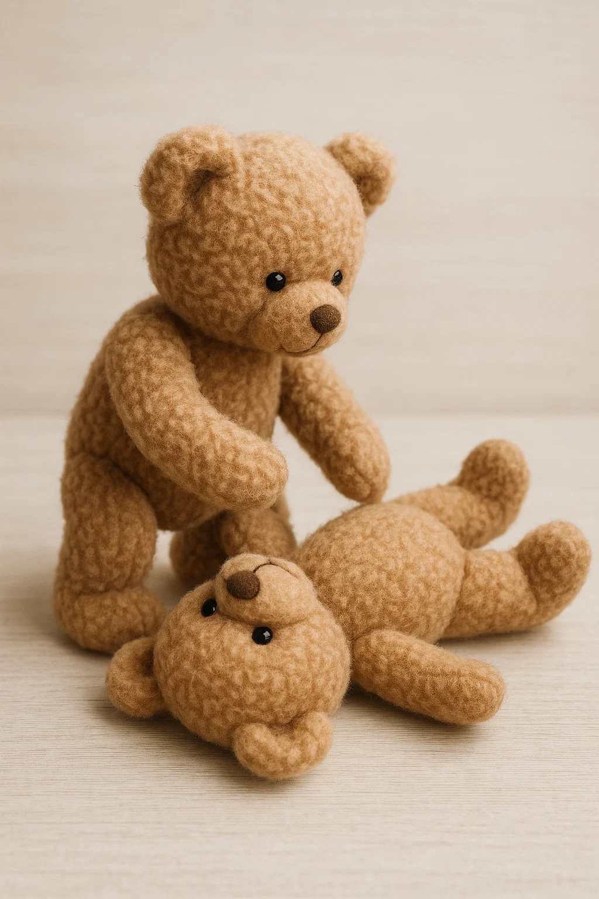

Vizsgáld meg, hogy biztonságos –e a terep. Ha igen, menj oda a sérülthöz és jó hangosan köszönj neki: „Jó napot!” Ha nem mozdul, rázd meg a vállát.

Vizsgáld meg, hogy vesz –e levegőt. Kicsit emeld meg az állát és tedd a füledet az orra fölé. Számolj el 10-ig lassan. Ennyi idő alatt 2 levegőt kell, hogy vegyen.
Ha nem hallottad, hogy levegőt vett, akkor hívd a mentősöket a 112 számon. Mondd el hogy hívnak, hol vagy most, mit tapasztaltál.
Mindenben segíteni fognak. Csak tedd, amit mondanak. Amennyire tudod, nyomd le a mellkasát a kemény szegycsont részénél a mellkasán, majd engedd fel. Addig végezd ezt, amíg ki nem érnek a mentősök.